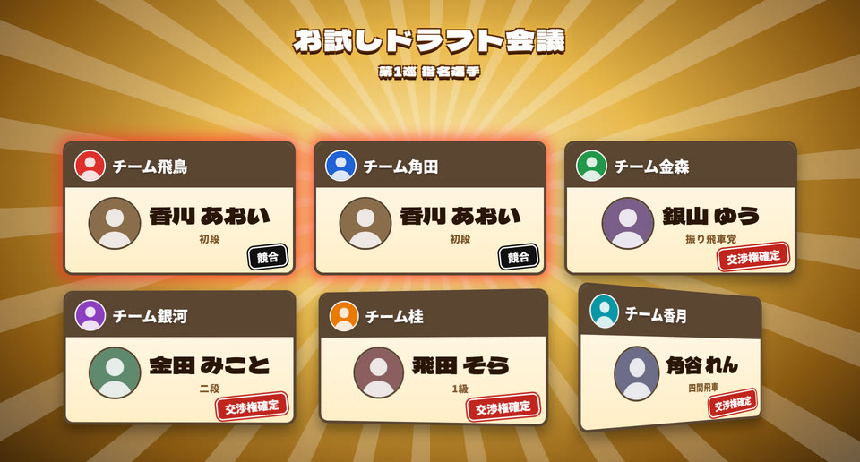
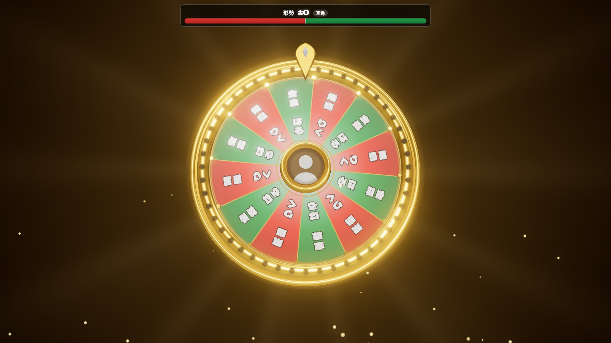
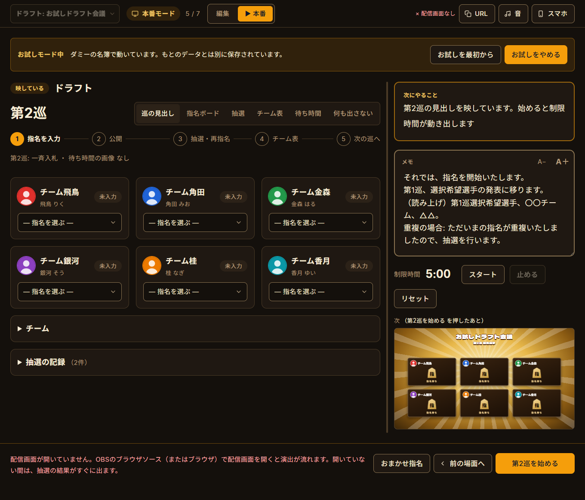
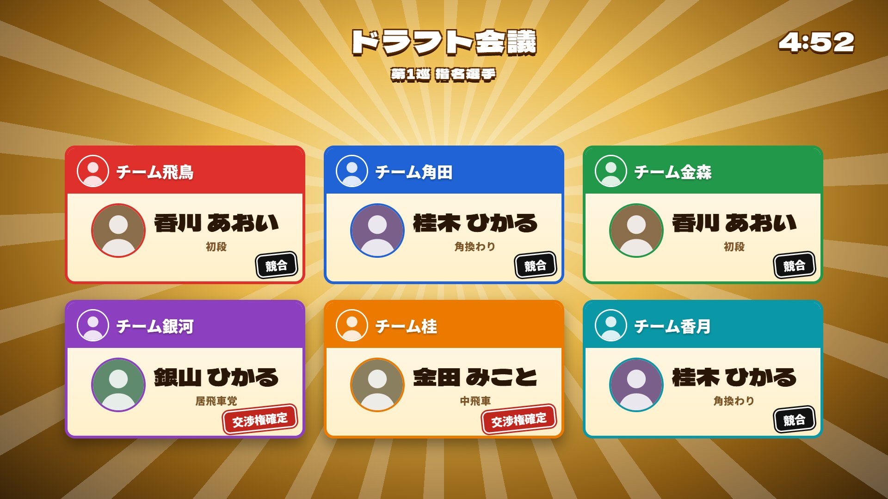

配信画面は、5つのテーマから
巡の見出しから、指名ボード、チーム表、抽選に入る瞬間の演出まで。テーマを選ぶだけで、番組まるごと着せ替えられます。

番組の進行まで、まかせられる
抽選は3種類。どれも公平に
重複した指名は、ルーレット・封筒・あみだくじから巡ごとに選んで抽選します。演出は結果を盛り上げる飾りで、重複したリーダー全員が同じ確率。抽選はすべて記録に残ります。

押すのはオレンジのボタンだけ
オープニングからリーダー紹介、ドラフト、最終チーム表まで、進行表どおりに進みます。次に押すボタンが1つずつ出るので、流れに沿って押していくだけ。本番モードでは、映している場面・次の場面・自分用のメモだけになります。

指名ボードもチーム表も、そのまま配信に
OBS にブラウザソースを1つ足すだけ。指名の公開、競合のハンコ、チーム表、リーダー紹介の立ち絵まで、場面に合わせて切り替わります。

スマホから操作
同じ Wi-Fi で QR コードを読むだけ。指名の入力も、くじの色選びも手元で。
お試しモード
ダミーの名簿で、本番のデータを触らずに一通り試せます。
オフラインで動く
フォントも3D表示もアプリに入っています。会場のネットに左右されません。
はじめかた
ダウンロードして起動
Windows は exe をダブルクリック。Mac は dmg を開いて「アプリケーション」へ。初回の警告は「詳細情報 → 実行」（Mac は「システム設定 → プライバシーとセキュリティ → このまま開く」）。
お試しで動かしてみる
右上の「お試し」で、ダミーの名簿で指名から抽選まで体験。終わったら「お試しをやめる」。
OBS に配信画面を追加
ブラウザソースに
http://localhost:5188/overlay、幅 1920・高さ 1080。「OBSで音声を制御する」にチェック。
よくある質問
無料ですか？
無料です。MIT ライセンスで公開しています。
BGM は入っていますか？
入っていません。お持ちの曲（mp3 / ogg / wav / m4a など）を「音」の「曲を追加」で入れてください。フリー素材を使うときは、それぞれの利用規約を守ってください。
抽選の結果は本当にランダムですか？
重複したリーダー全員から同じ確率で選びます（暗号用の乱数）。ルーレットや封筒の演出で確率は変わりません。くじを選ぶ方式も、どの順番で何を選んでも当たる確率は同じです。
指名を間違えたら？
Ctrl+Z で取り消せます。抽選の取り消しは確認が出て、取り消したことが記録に残ります。
配信画面が映りません
アプリを起動しているか、OBS のブラウザソースの URL が http://localhost:5188/overlay になっているかを確かめてください。アプリ右上が「● 表示中」ならつながっています。
Mac で動きますか？
試験的に Mac 版も用意しています（M1 以降と Intel）。動かないところがあれば、下のフォームから教えてください。
要望や不具合はどこに送ればいいですか？
要望・不具合のフォームから送ってください。アカウントは要りません。